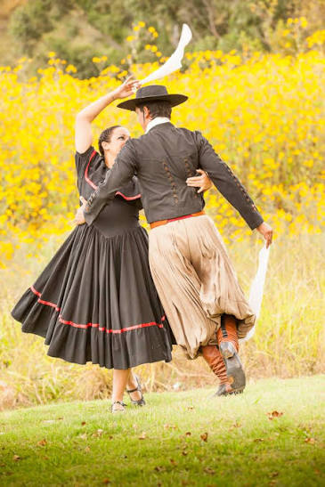
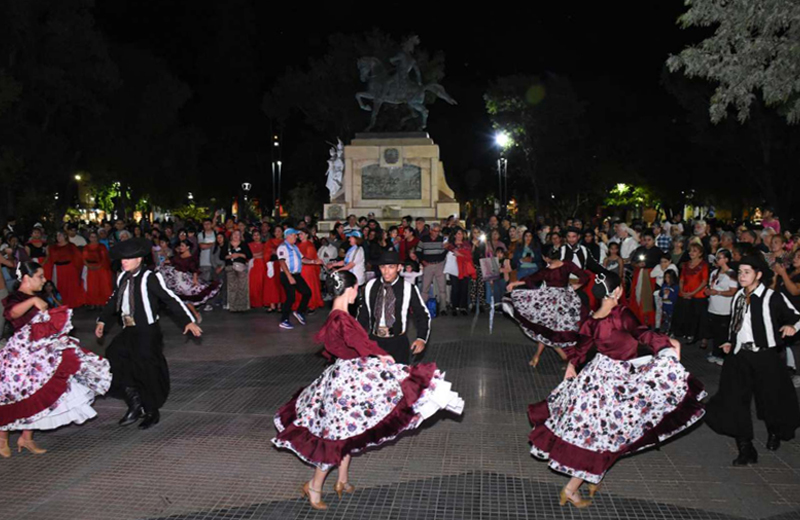
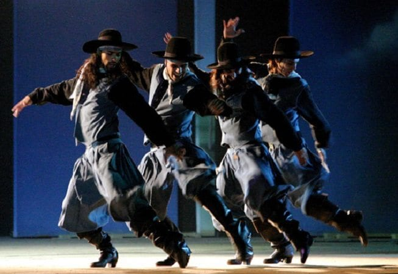
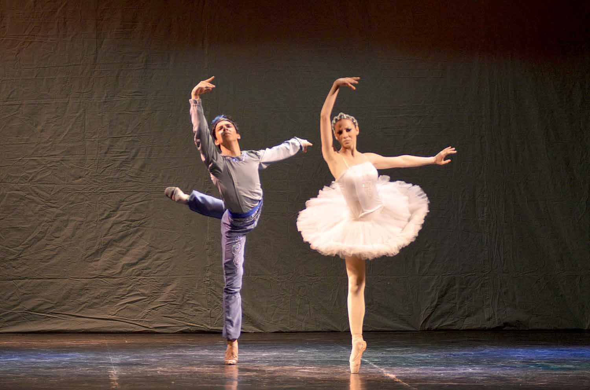
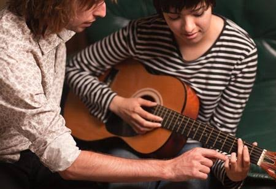
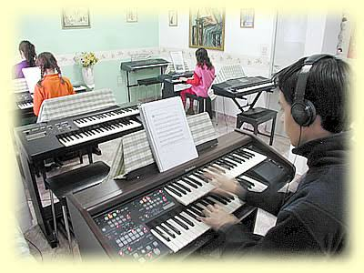
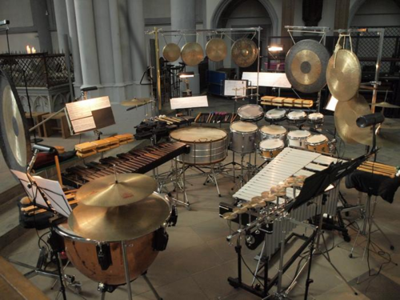
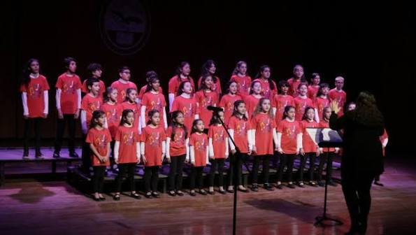
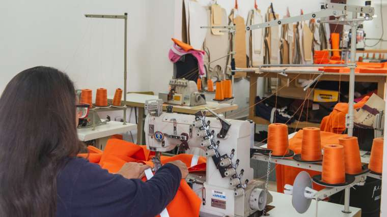
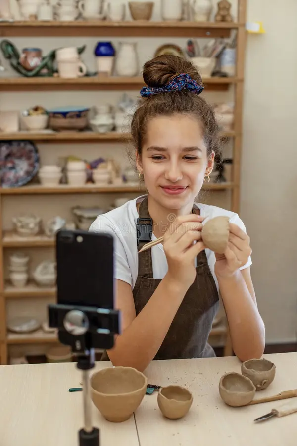

Folclore argentino
- Edad: 13 a 17 años
- Día: Lunes
- Horario: 16:00 h
- Duración: 1 hora
- Cupos disponibles: 12
Arte, cultura y comunidad
En el CEMEPA de Caleta Olivia ofrecemos espacios de formación, encuentro y expresión para niñas, niños, adolescentes y personas adultas. Conocé los talleres disponibles y elegí la propuesta que mejor se adapte a tus intereses.
Se muestran todos los talleres disponibles.
Propuestas de danza tradicional, clásica y contemporánea para distintas edades.







Talleres para aprender instrumentos, desarrollar la voz, explorar el ritmo y participar de experiencias musicales colectivas.




Espacios para explorar actuación, juego escénico, expresión corporal, dramaturgia y creación colectiva.


Talleres para experimentar con color, dibujo, materiales, imagen, técnicas manuales y recursos digitales.


Talleres para crear con materiales, técnicas artesanales y proyectos de diseño vinculados a la producción cultural.




No se encontraron talleres que coincidan con los filtros seleccionados. Probá con otra disciplina o rango de edad.